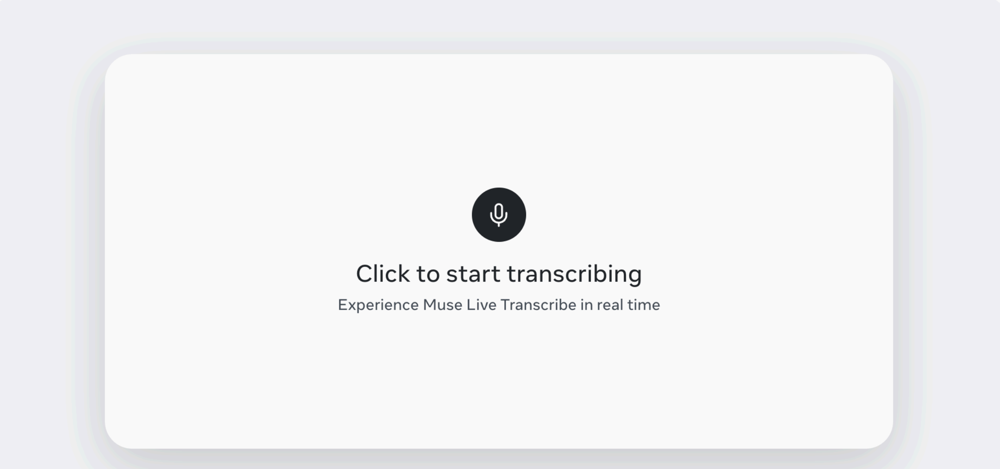
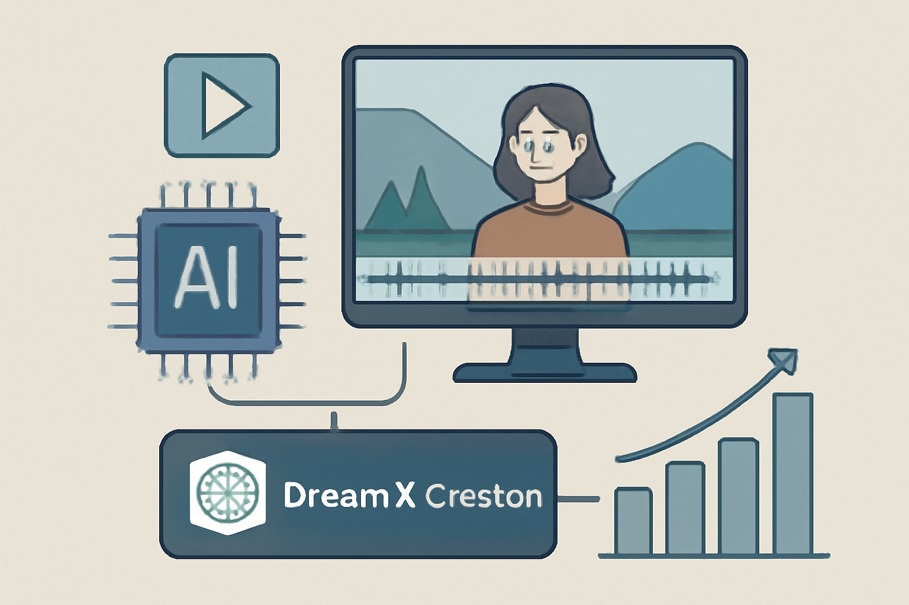
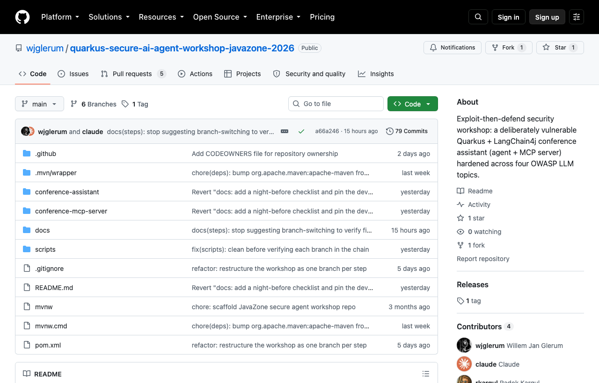

01 프론티어 & 사업 동향
Anthropic, Claude Fable 5.1과 Mythos 5.1 공개
“Claude Fable 5.1과 Claude Mythos 5.1은 같은 모델이지만 안전장치 수준이 다르다.”
Weekly AI Brief
이번 주에는 프론티어 모델 경쟁이 다시 속도를 냈다. Anthropic과 Meta는 모델 성능과 실시간 처리 쪽을 밀었고, OpenAI와 Nvidia 관련 소식은 인수·계약 재편까지 번지며 생태계 주도권 경쟁을 키웠다. 오픈 진영에서는 Qwen, GLM-5.3 같은 모델이 계산 효율과 오픈웨이트 전환을 내세웠고, Hugging Face는 음성인식 평가와 다국어 범위를 넓혔다. 연구와 보안 쪽에서는 퀀트 연구의 데이터 누수 차단과 AI 에이전트 보안 점검이 나와, 모델 성능 경쟁만큼 운영 통제도 중요해졌음을 보여줬다. 이번 주는 성능 향상보다도 누가 배포·평가·보안 기준을 쥐는지에 먼저 눈을 둘 필요가 있다.

Editor's Pick
01 프론티어 & 사업 동향
“Claude Fable 5.1과 Claude Mythos 5.1은 같은 모델이지만 안전장치 수준이 다르다.”
02 프론티어 & 사업 동향
“OpenAI는 Cursor에 앞으로 나올 모델은 제공하지 않기로 했다.”
03 프론티어 & 사업 동향
“Muse Voice Transcribe는 영어 실시간 전사 벤치마크에서 경쟁 모델보다 낮은 3.1% 오류율을 기록했다.”
대형 연구소의 모델 공개·프리뷰, 규제/정책, 파트너십 등 산업이 움직인 사건입니다.
01 Anthropic 게시일 2026.09.01
Anthropic이 코딩과 지식 업무용 신모델 Claude Fable 5.
“Claude Fable 5.1과 Claude Mythos 5.1은 같은 모델이지만 안전장치 수준이 다르다.”
 01
0102 OpenAI 게시일 2026.08.28
OpenAI가 SpaceX에 인수된 Cursor와의 모델 제공 계약을 종료하기로 했다.
“OpenAI는 Cursor에 앞으로 나올 모델은 제공하지 않기로 했다.”
 02
0203 The New Stack 게시일 2026.09.01
Meta가 실시간 음성 인식 모델 Muse Voice Transcribe를 출시했다.
“Muse Voice Transcribe는 영어 실시간 전사 벤치마크에서 경쟁 모델보다 낮은 3.1% 오류율을 기록했다.”

0304 businessinsider.com 게시일 2026.08.27
Nvidia가 Hugging Face를 130억 달러 이상에 인수하는 방안을 논의한 것으로 전해졌다.
“Nvidia는 Hugging Face를 130억 달러 이상에 인수하는 방안을 논의했다.”
 04
04오픈웨이트 모델과 GitHub/Hugging Face 생태계에서 주목할 프로젝트입니다.
05 arXiv 게시일 2026.08.31
Qwen이 Qwen3.
“Qwen3.8-Flash-Next는 125B 모델이지만 토큰당 실제로 쓰는 파라미터는 6B다.”
 05
0506 Hugging Face 게시일 2026.08.28
Hugging Face와 Voice Arena가 오픈 ASR 리더보드에 힌디어와 인도식 영어 평가셋을 추가했다.
“힌디어는 5억 명 이상이 쓰지만, 이번에야 오픈 ASR 리더보드에 처음 들어갔다.”
 06
0607 arXiv 게시일 2026.08.31
DreamX-Creator 1.
“DreamX-Creator 1.0은 첫 프레임과 텍스트를 받아 오디오와 영상을 함께 생성한다.”

0708 Hugging Face · zai-org 게시일 2026.08.28
zai-org가 GLM-5.
“GLM-5.3은 여러 코딩·에이전트 벤치마크에서 GLM-5.2보다 큰 폭으로 점수를 올렸다.”
 08
08논문·벤치마크·기법 연구 중 실무 관점에서 볼 만한 결과입니다.
09 MarkTechPost 게시일 2026.09.01
AQuA는 퀀트 연구용 자율 에이전트가 스스로 실험을 쓰면서 생기는 데이터 누수와 과적합 문제를 줄이려는 연구 프레임워크다.
“AQuA는 에이전트가 연구 과정을 스스로 고치되, 평가 기준은 고정해 둔 두 개의 퀀트 연구 시스템이다.”
 09
09개발 도구, 인프라, 보안 이슈 등 바로 써먹거나 조심해야 할 소식입니다.
10 GitHub · wjglerum 게시일 2026.09.01
이 GitHub 저장소는 일부러 취약하게 만든 AI 에이전트 예제를 공격한 뒤, 방어책을 적용해 보는 실습형 보안 워크숍이다.
“이 저장소는 일부러 취약하게 만든 Quarkus 기반 회의 도우미를 공격하고, 다시 방어하도록 구성한 보안 워크숍이다.”

10